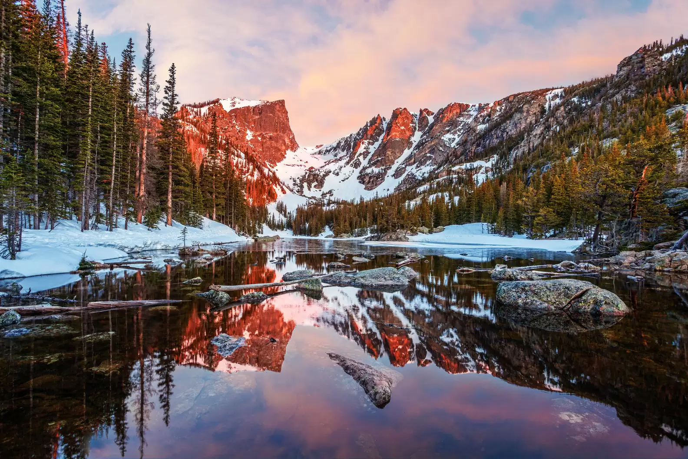
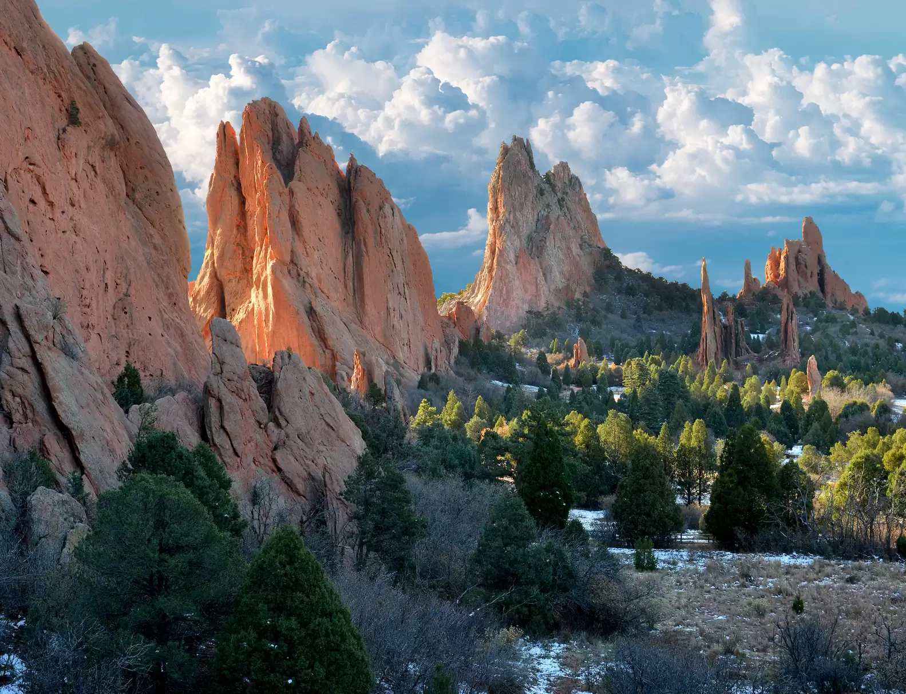
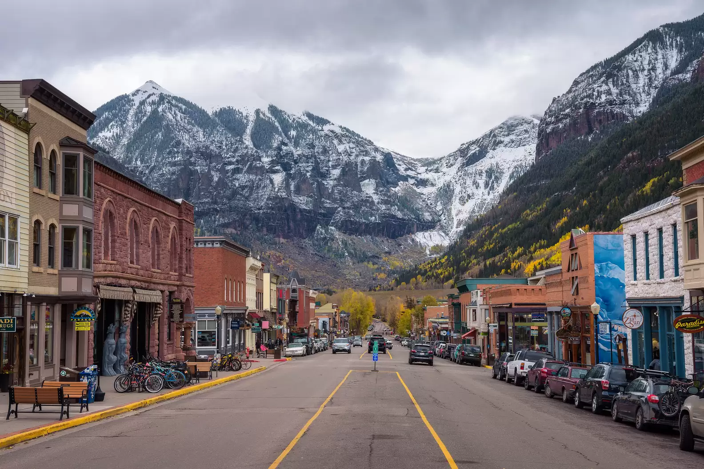
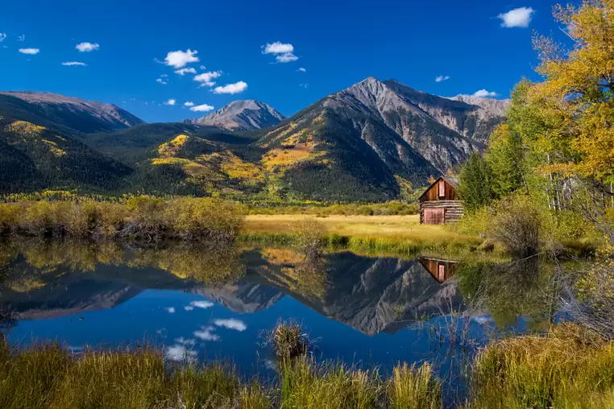

Rocky Mountain National Park
Distance from Denver: 66 miles northwest, 90-minute drive
With postcard-like vistas and 355 miles of hiking trails, Rocky Mountain National Park is one of the most popular National Parks in the country. But if you’d rather see the views without breaking a sweat, drive Trail Ridge Road, the highest paved road in the state, which is generally open May through October. To get to the park’s entrance from Denver, you’ll go through the town of Estes Park where along with lots of local elk herds, you can also check out the shops and restaurants on main street and the historic Stanley Hotel (aka the real life place that inspired Stephen King’s The Shining).
Book your trip! More infoScenic Places
Garden of the Gods
Distance from Denver: 68 miles south, 90-minute drive
This National Registered Landmark in Colorado Springs is another favorite for natural red rock formations, backed by the snowcapped Pikes Peak. It’s free to visit, with hiking trails and a loop to drive that offers plenty of scenic pull-offs, and be sure to look out for the famous “kissing camels” formation along the way. Horseback riding and rock climbing are other popular activities, along with a drive up the 19 mile Pikes Peak Highway, which will take you to the summit of the towering mountain.
Telluride
Distance from Denver: 364 miles southwest, 6.5-hour drive
One of the most stunning mountain towns in the state (and honestly, the world), Telluride’s mountain backdrops greeting you upon arrival to its historic downtown will have you stopped in your tracks. But don’t idle for too long; board the free ski gondola (which runs most months of the year as the only public transportation service of its kind in America) to check out the sights as you bar and restaurant-hop between downtown Telluride and Mountain Village, where the world-class Telluride Ski Resort is located.
Twin Lakes
Distance from Denver: 122 miles southwest, 2 hour, 15 minute-drive
The autumn landscapes here are simply unparalleled, though the cliché that it’s beautiful every time of year is, well, true. Part of the beauty of Twin Lakes (after you get past the striking contrast of yellow aspens against deep blue sky), is that you can appreciate it in a variety of ways—on foot hiking through the trees, on the water in a boat or balancing on a SUP board, or on a few wheels. Oh, and don’t mind 14ers Mt. Elbert and Mt. Massive casually towering nearby; you can add conquering them to your to-do list after you’ve taken in the sights.
Excited? Book a trip above. Or if you need more convincing, check out other places in Colorado.